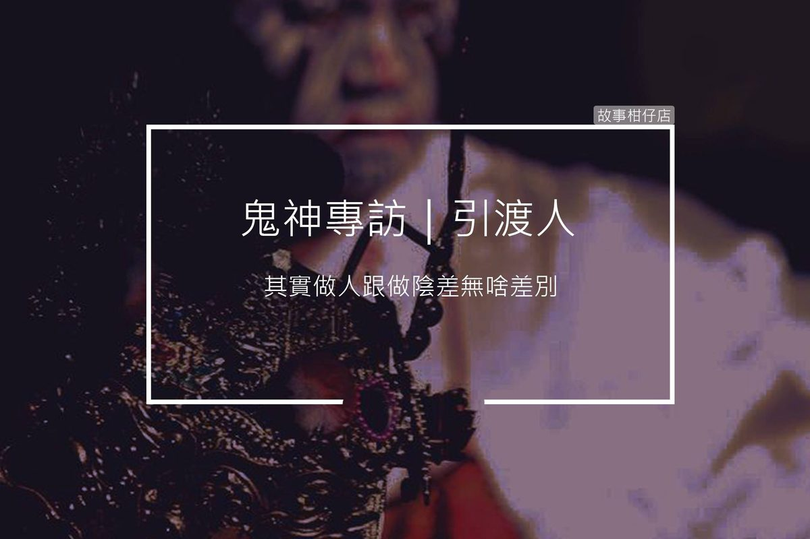

鬼神專訪/引渡人

採訪人物：引渡人
採訪人：剪溜
故事回顧：
剪溜：當初怎麼會來作引渡人？
引渡人：要講這件事喔，起碼要抽掉半包菸，你有沒有菸？都不知道我做這個很可憐啦，薪水低，老鳥還會搶功勞，獎金也沒多少，想買包菸都要考慮半天。
陰間有福利社賣菸啊，看牌子啦，我抽的是最便宜的，一包也要五十兩金元寶。
嗯，你這菸不錯。我本來是泉州人，清朝那時候來台灣的啦。我跟你講，那些漳州豬真的很鴨霸，硬是截斷阮的水去灌溉他們農田，可惡啦。阮泉州人不是這麼好欺負的，時不時都在械鬥。講了你莫笑，其實我很小膽，不太敢去跟人家冤家，有一天我剛吃飽飯在外面乘涼，厝邊頭尾傢俬拿著又要去械鬥，隔壁一個種蕃薯的硬把我拖去，塞了根鋤頭給我。
鋤頭怎麼砍得過刀，我躲在後面想說趕快溜走。沒想到背後一陣涼，哭么，我被砍了，大家忙著打架沒人理我，我就這樣死了，有夠冤枉。
下陰間以後，欸，你有想像過陰間的樣子嗎？跟我想的很不一樣，很進步，大家都穿西裝，不是拿毛筆是用鍵盤打字喔！我剛來的時候，很俗，哈哈哈。
到了地府就開始分配，作惡多端的十殿地獄走一遭，生前吃素禮佛的就去西方極樂世界，像我這種沒犯大罪，也沒特別行善的，該過的關卡過一過，就可以選要接下陰間職務還是去投胎。
我怕到時投了胎更苦命，羅漢腳孤孤單單，反正地府走一圈，大家有點感情，乾脆就從最菜的引渡人做起。
剪溜：這行業有沒有甚麼職場暴力？
引渡人：我上次聽到一句：有人就有江湖。別說人啦，我們陰間也是一個江湖。五年前我去勾一個自殺的魂，回陰間路上，他一直說自己受不了主管每天罵他、時不時要他揹黑鍋，威脅要扣薪水，他說這根本就是職場霸凌、職場暴力。
厚～那時我才知道這叫職場暴力喔！其實我主管也差不多餒！做久了就很油條，上次去勾一個難產的，哭么，他跟土地公聊太久耽誤時辰，魂勾沒到，回來就全部推到我頭上。我被罰三個月只能領底薪一百五十金元寶，還要勞動服務，去地獄拖地清血水、燒油鍋，五告衰。
我能說啥？說出來沒比較好，以後還是得跟那主管一起去勾魂，他一定會找辦法討回來啦。想一想，算了，自己吞下去。反正那主管也升官了啦，不然我哪會跟你講。
剪溜：接過最麻煩的客戶是？
引渡人：其實都麻煩啦，人有感情，死都不好走。有一次鬧得很轟動，一個大老闆病得差不多，我準備要去勾魂，到那裡我嚇一跳，他三個兒子不知道怎麼作法請來一堆惡鬼，不准我們將魂勾走，搶半天。
你以為那些兒子請惡鬼留住老爸是孝順哦？笑死人。是因為老爸遺產沒分平均，兒子不准他死啦！要逼他重寫遺囑才肯放他上路，這款兒子，不如不要生。
欸欸，尊重一點，那些惡鬼跟我們不一樣，我們是照規矩辦事，算是公家機關，他們喔，是一些旁門左道啦，簡單講就像陰間的黑社會。如果他們要搶這條魂，哪管你生死簿怎樣寫。
那次搶魂搶到時辰快過，若是真被搶走，我就不是扣薪這麼簡單。主管趕快請牛頭馬面將軍跟黑白無常來幫忙，兩邊差點火拼起來，才趕在時辰內將魂魄送到地府。有夠緊張，跑得我大粒汗小粒汗，那個死者也可憐啦，一個大老闆，一路流眼淚，怨嘆生到三個不孝子。
剪溜：那位長官祢覺得最照顧人？那哪為你覺得最……？
引渡人：你這採訪會公開嗎？問這問題很像在害我耶。其實大家都很好啦，尤其第五殿閻王包拯，別看他臉黑黑，其實心肝很軟。他知道我們四處奔波勾魂很辛苦，時常請喝涼的，開會時也會幫忙爭取更新工具，要不然喔，一支引魂旗用了兩百年，破破爛爛是能看？勾魂地圖app也要更新啦，不然老是跑錯地方，浪費時間。
我沒有覺得最怎樣的啦！工作就是這樣啊，難免有不如意的，有些長官很兇，其實是為你好。像白無常白姐，她是性子急，要不然她也教我很多。好啦這題跳過、跳過。
剪溜：如果再給你選一次，你會直接投胎還是接下職務？
引渡人：你這個問題喔，真的是陽間人才會問。
決定要當引渡人的那晚我失眠了，想說，奇怪我幹嘛好好人不做要做陰差？不到兩個月，我才發現，其實做人跟做陰差無啥差別，我現在一樣算是吃頭路，也會想拼加薪升官，這跟人間有什麼兩樣？最大的差別可能就是，陰差沒有死的機會。
有得死，不錯啊！人才會珍惜生命，對嗎？雖然現在不珍惜的也很多啦。是說喔，在地府要結婚困難很多，女陰差很少啦，而且還要經過十殿長官同意，認為不會因為私人感情影響工作，才可以結婚。
我生前還沒娶，在室的餒，如果說選擇投胎，也是希望可以感受一下娶老婆的感覺啦。